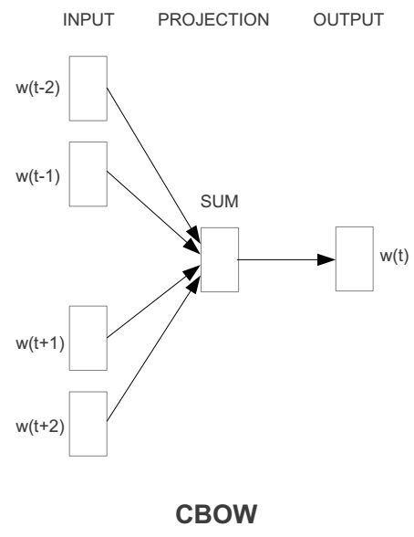
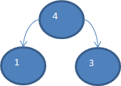
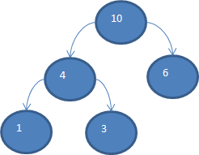
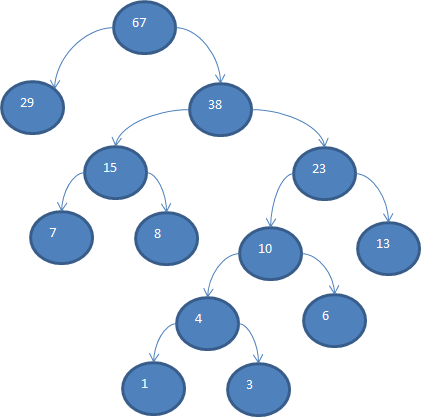
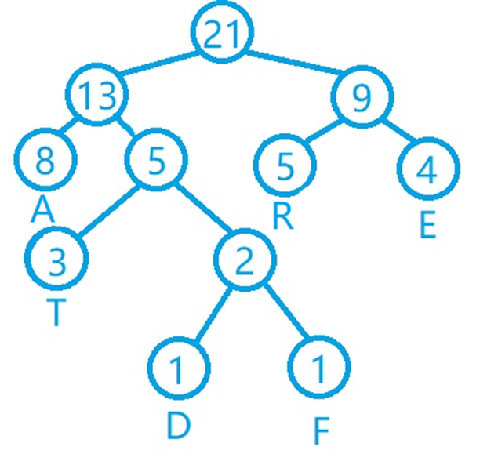
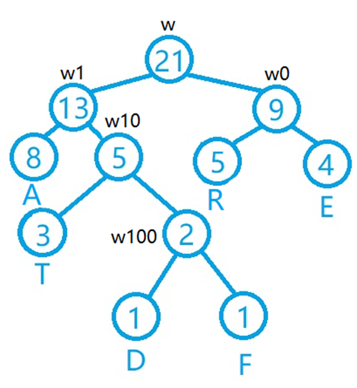
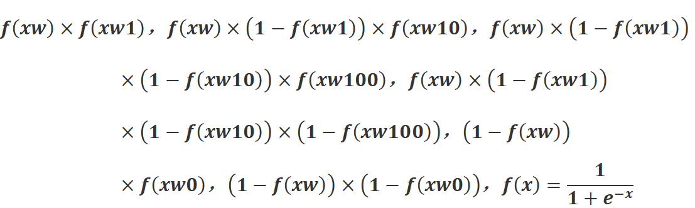
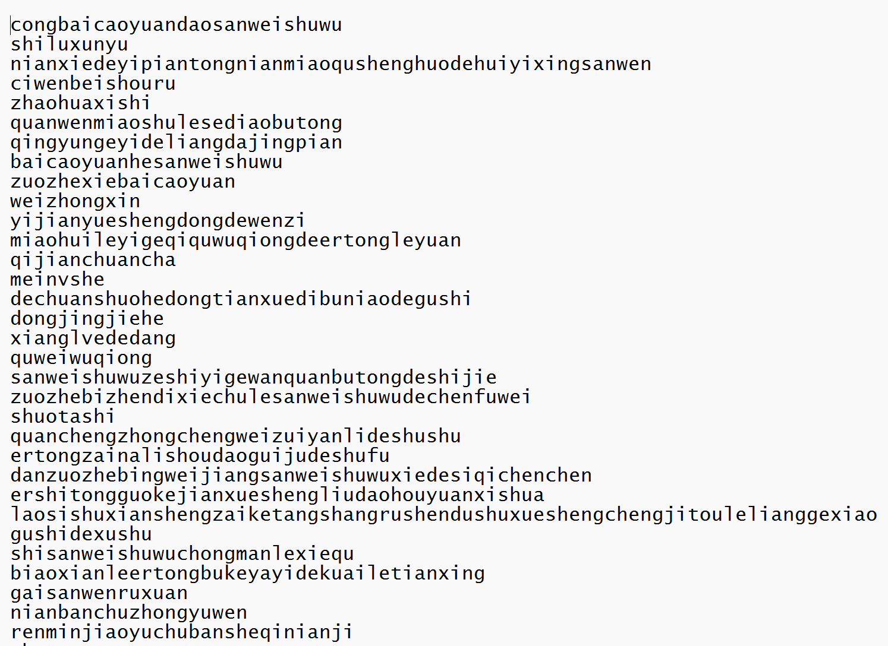
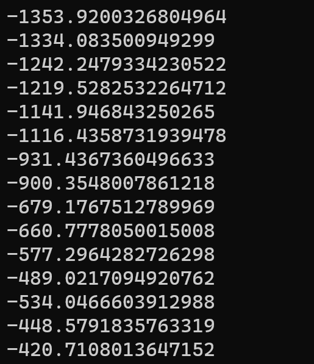
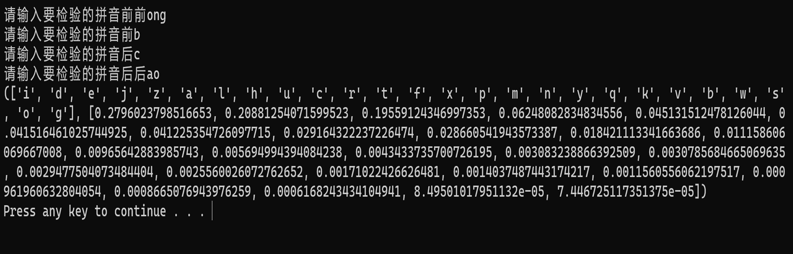

人工智能学习笔记六――CBOW模型
连续词袋模型（CBOW）模型是word2vec下的一个模型，是一群用来产生词向量的相关模型。这些模型为浅而双层的神经网络，用来训练以重新建构语言学之词文本。网络以词表现，并且需猜测相邻位置的输入词，在word2vec中词袋模型假设下，词的顺序是不重要的。训练完成之后，word2vec模型可用来映射每个词到一个向量，可用来表示词对词之间的关系，该向量为神经网络的隐藏层。
具体算法如下：
首先，在CBOW模型中，每一个词都对应着一个一维的词向量，这个词向量的大小是自己设定的，一般设置为50到300维度。刚开始的时候，每一个词的词向量都是随机初始化的，后续会通过梯度下降法进行更新。

图1 CBOW模型示意图
接着就是CBOW的训练部分，CBOW模型的输入为一串文本，通常文本的长度设定为5，当然也可以根据具体情况进行更改。如图1所示，假设输入的文本为“我想踢足球”，那么图中的W(t-2)就是“我”，W(t-1)就是“想”，W(t+1)就是“足”，W(t+2)就是“球”。再假设随机初始化的词向量字典为{“我”：[0.2，0.1，0.3]，“想”：[0.1，0.3，0.4]，“足”：[0.8，0.5，0.1]，“球”：[0.5，0.5，0.5]}，那么图1中的sum操作就是将“我想足球”这四个字的词向量从头到尾依次按顺序拼接而成，也就是[0.2，0.1，0.3，0.1，0.3，0.4，0.8，0.5，0.1，0.5，0.5，0.5]，那么这个拼接而成的数组就是最后要带入神经网络进行计算的输入，通过这个输入，我们希望神经网络能够计算出“踢”这个字。
当然，这个神经网络有一些特殊，由于对于汉字文本而言，常用的一级文字就有将近3500个，如果我们使用传统的全连接层的softmax输出，将会有很大的计算量，为了减小运算量，模型里采用了哈夫曼树的编码格式。
在数据通信中，我们通常需要将传送的文字转换成二进制的字符串，用0，1码的不同排列来表示字符。例如，需传送的报文为“AFTER DATA EAR ARE ART AREA”，这里用到的字符集为“A，E，R，T，F，D”，各字母出现的次数为{8，4，5，3，1，1}。现要求为这些字母设计编码。要区别6个字母，最简单的二进制编码方式是等长编码，固定采用3位二进制，可分别用000、001、010、011、100、101对“A，E，R，T，F，D”进行编码发送，当对方接收报文时再按照三位一分进行译码。显然编码的长度取决报文中不同字符的个数。若报文中可能出现26个不同字符，则固定编码长度为5。然而，传送报文时总是希望总长度尽可能短。在实际应用中，各个字符的出现频度或使用次数是不相同的，如A、B、C的使用频率远远高于X、Y、Z，自然会想到设计编码时，让使用频率高的用短码，使用频率低的用长码，以优化整个报文编码。
为使不等长编码为前缀编码(即要求一个字符的编码不能是另一个字符编码的前缀)，可用字符集中的每个字符作为叶子结点生成一棵编码二叉树，为了获得传送报文的最短长度，可将每个字符的出现频率作为字符结点的权值赋予该结点上，显然字使用频率越小权值越小，权值越小叶子就越靠下，于是频率小编码长，频率高编码短，这样就保证了此树的最小带权路径长度效果上就是传送报文的最短长度。因此，求传送报文的最短长度问题转化为求由字符集中的所有字符作为叶子结点，由字符出现频率作为其权值所产生的哈夫曼树的问题。利用哈夫曼树来设计二进制的前缀编码，既满足前缀编码的条件，又保证报文编码总长最短。
基本步骤如下：
1，从小到大进行排序, 将每一个数据，每个数据都是一个节点，每个节点可以看成是一颗最简单的二叉树
2，取出根节点权值最小的两颗二叉树
3，组成一颗新的二叉树,该新的二叉树的根节点的权值是前面两颗二叉树根节点权值的和
4，再将这颗新的二叉树，以根节点的权值大小再次排序，不断重复1-2-3-4的步骤，直到数列中，所有的数据都被处理，就得到一颗哈夫曼树
图解步骤：
以数组{13, 7, 8, 3, 29, 6,
1}为例，要求转成一颗赫夫曼树
首先把原数组以从小到大顺序来排列{1,3,6,7,8,13,29}
把每个数据看做是一个节点，取出节点权值最小的两个节点 1, 3 组成一颗新的二叉树，该二叉树权值为 3+1 = 4。

在原序列中将第 2 步取出的两个权值最小的移除，然后将第 2 步生成的新节点的权值加入到原序列中，并重新排序，也就是变为{4,6,7,8,13,29}，然后生成新的二叉树。

按以上步骤不断生成新的树，也就是{7,8,10,13,29}，{10,13,15,29}，{15,23,29}，{29,41}，{67}。

因而，在CBOW模型中，我们首先需要统计出各个词的出现次数，然后生成关于词的哈夫曼树，做为训练的模型。假设我们拥有文本“AFTER DATA EAR ARE ART AREA”，那么先统计词频，得到：“A，E，R，T，F，D”，各字母出现的次数为{8，4，5，3，1，1}。那么编码之后的哈夫曼树如图2所示：

图2 哈夫曼树编码
这样编码可以优化高频词所占用的字节，比如查找“A”这个词，只需要从根节点执行“左左”的操作就可以找到，我们规定，往节点路径中大的那个数走为1，小的数走为0（本例中，左走为1，右走为0），那么所有词的编码就出来了，“A，E，R，T，F，D”编码分别是{11，00，01，101，1000，1001}
接着在每一个节点上增加一个权重参数（注意，只需要在节点上加权重参数即可），那么CBOW的神经网络模型部分就搭建好了。如图3所示。需要注意的是，这里的权重参数必须和输入数据的大小相对应。假如一个词的词向量大小是50，输入是4个词，那么输入向量的大小就是200，那么这里的权重参数也必须是大小为200的一维向量。

图3 哈夫曼树编码
对于它的计算过程，不妨还是以文本“AFTER
DATA EAR ARE ART AREA”举例，假设词向量编码的字典为{“A”：[0.2，0.1，0.3]，“E”：[0.1，0.3，0.4]，“R”：[0.8，0.5，0.1]，“T”：[0.5，0.5，0.5] ，“F”：[0.4，0.4，0.4] ，“D”：[0.3，0.3，0.3]}，假设选择单词AFTER为输入，那么我们希望输入W(t-2)=“A”，W(t-1)=“F”，W(t+1)=“E”，W(t+2)=“R”后，经过模型可以得到W(t)=“T”。根据查询字典，可以很快得出输入矩阵为[0.2，0.1，0.3，0.4，0.4，0.4，0.1，0.3，0.4，0.8，0.5，0.1]，设这个矩阵为X，那么输出为A，T，D，F，R，E的概率计算公式依次是

也就是从根节点一直往子节点做乘法计算，如果往左走（往数值大的一方走）就是正例，只需要计算X和该节点的权重参数W的乘机，然后进行sigmoid激活函数运算即可，最后的数值加入连乘运算中，如果往右走（往数值小的一方走）就是负例，那么就需要拿1减去XW经过sigmoid激活函数运算后的结果，再加入连乘运算中。
最后看一下CBOW模型的损失函数，由于最后的输出结果都是经过sigmoid激活函数运算的，输出的取值范围在0-1之间，所以使用的损失函数是交叉熵损失函数（CrossEntropy Loss）。
这里不妨以统计中文拼音的前后出现关联度为例，使用CBOW模型进行计算。
对于数据的选择，笔者截取了部分中小学的文章，并将它转化成了拼音，包括了《从百草园到三味书屋》，《二十年后》，《我的叔叔于勒》等文章。

图4 数据集展示
由于是演示，笔者只训练了15个epoch，损失函数的值稍稍有些大。

图5 损失函数变化图
最后的演示成果：

图6 概率预测
项目的代码已经放在了我的github上caodong0225.github.io/CBOW
at master ・
caodong0225/caodong0225.github.io，项目中information.txt存放的是词频统计数量，frequency.txt存放的是每个字母的哈夫曼树编码，weightdata.txt存放的是词向量字典，笔者用的是50大小的一维向量，strudata.txt存放的是每个哈夫曼树节点的权重参数，train.py是训练代码，predict.py是预测代码，dataset.txt存放的是训练数据，halfmantree.py是读取information.txt中每个词的词频，绘制哈夫曼编码，并写入frequency.txt中。
本文地址：TLearning (caodong0225.github.io)